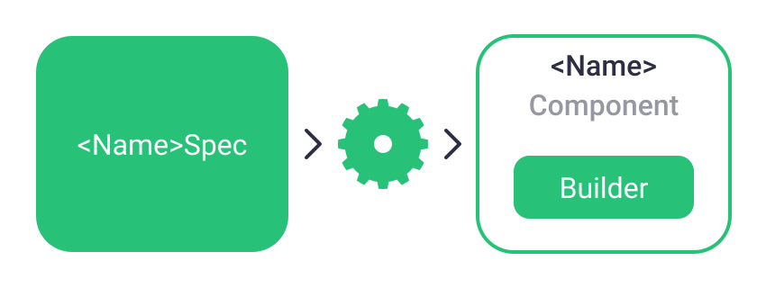
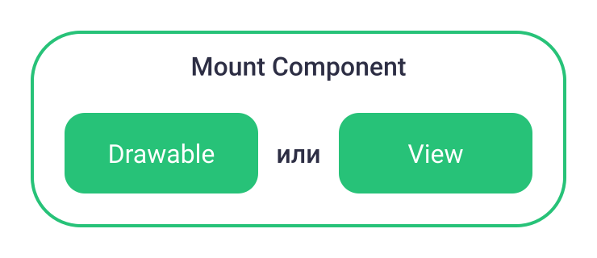
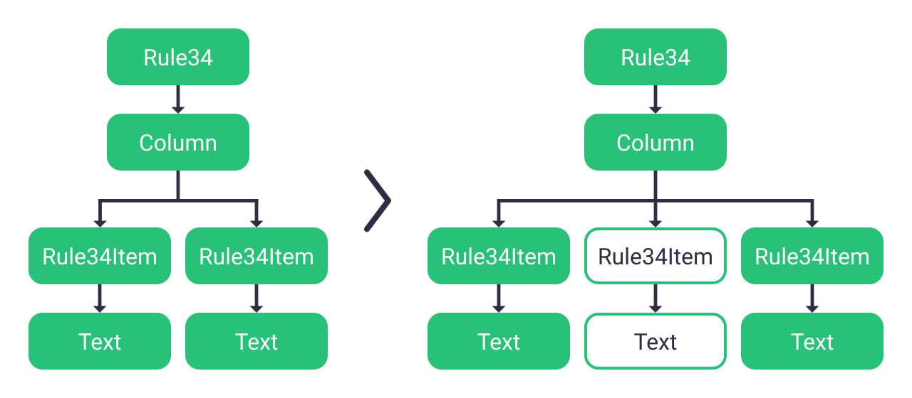
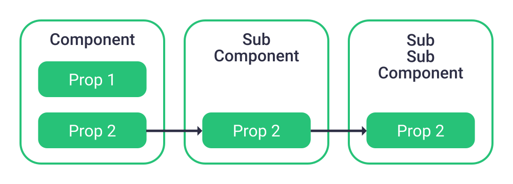

Litho на практике
Жизненный цикл View
Как ускорить?
Оптимизация
кода
Асинхронное
выполнение
Без ощутимой
деградации
Внутри Inflate
Парсинг
XML
Создание
View
Загрузка
ресурсов
AsyncLayoutInflater

Медленный Measure
TextView создаёт Layout
Контейнеры вызывают measure() дважды
Ускоряем TextView
Google way
Создаём PrecomputedText асинхронно
Устанавливаем PrecomputedText в TextView
Ускоряем TextView
Hardcore way
Создаём Layout асинхронно
Рисуем Layout сами
Ускоряем ли?
Всё в одной View
Замедляем
Анимируется прогресс
Отрисовка каждый фрейм
Рисуется всё!
Display Lists
Создаются стандартными виджетами
Кешируют команды отрисовки
Являются приватным API
Ускоряем контейнеры
Пишем свои контейнеры
Используем Constraint Layout*
А при чём здесь Litho?
Facebook уже всё сделал
Litho
Yoga
Text Layout Builder
UI = ƒ (@Props, @State)
Компоненты
Как в React
APT процессор
@LayoutSpec
@MountSpec
Стандартные компоненты
- Row
- Column
- Text
- Image
- SolidColor
- EditText
- Progress
- HorizontalScroll
- VerticalScroll
- Spinner
- Card
Асинхронные операции
Создание дерева компонент
Загрузка ресурсов
measure
и
layout
Другие оптимизации
Incremental mount
Примитивы вместо View
Отрисовка в display list
Ну, покажи уже код!
Rule 34
Spec для элемента
@LayoutSpec(isPureRender = true)
object Rule34ItemSpec {
@OnCreateLayout
fun onCreateLayout(
context: ComponentContext,
@Prop white: Boolean,
@Prop(resType = ResType.STRING) title: CharSequence
): Component {
return Text.create(context)
.backgroundColor(if (white) Color.WHITE else Color.BLACK)
.text(title)
.textColor(if (white) Color.BLACK else Color.WHITE)
.build()
}
}
Spec для контейнера
@LayoutSpec(isPureRender = true)
object Rule34Spec {
@OnCreateLayout
fun onCreateLayout
context: ComponentContext,
@Prop showBlack: Boolean
): Component {
val builder = Column.create(context)
builder.child(createItem(context, "Rule", white = true))
if (showBlack) {
builder.child(createItem(context, "¯\\_(ツ)_/¯", white = false))
}
builder.child(createItem(context, "34", white = true))
return builder.build()
}
}
createItem()
fun createItem(
context: ComponentContext,
title: String,
white: Boolean
): Component.Builder<*> {
return Rule34Item.create(context)
.title(title)
.white(white)
}
Внутри Activity
private lateinit var lithoView: LithoView
override fun onCreate(savedInstanceState: Bundle?) {
super.onCreate(savedInstanceState)
context = ComponentContext(this)
lithoView = LithoView(context)
setContentView(lithoView)
updateComponent(showBlack = false)
}
createComponent()
fun updateComponent(
context: ComponentContext,
showBlack: Boolean
): Component {
val component = Rule34.create(context)
.title(title)
.showBlack(showBlack)
.build()
lithoView.setComponentAsync(component)
}
Так, а где анимация?
Внутри Rule34Spec
@OnCreateTransition
fun onCreateTransition(
context: ComponentContext,
@Prop showBlack: Boolean
): Transition {
val whiteTransition = Transition.create("white-1", "white-2")
.animate(AnimatedProperties.Y)
val blackTransition = Transition.create("black")
.animate(AnimatedProperties.X)
.appearFrom(DimensionValue.widthPercentageOffset(-100f))
.disappearTo(DimensionValue.widthPercentageOffset(-100f))
return if (showBlack) {
Transition.sequence(whiteTransition, blackTransition)
} else {
Transition.sequence(blackTransition, whiteTransition)
}
}
Изменение дерева компонентов
И никаких проблем?
Конечно
(нет)
Litho — это фреймворк
Моя борьба
Компоненты не расширяемы
Нельзя поменять сравнение
Отсутствует* жизненный цикл
Имитация жизненного цикла
VisibleEvent
InvisibleEvent
Если что — сделаю View
Ожидание
Реальность
В любой непонятной ситуации
LithoView.performIncrementalMount()Проброс Props
Явно
@TreeProp
@InjectProp
Явный проброс @Prop
@TreeProp

@InjectProp
Поддерживаемые DI фреймворки
Документация?
Нет, не слышал
Полезные ссылки
- https://fblitho.com
-
View performance deep dive
https://youtu.be/ILtVu2EC6Ec -
Litho: A Declarative Framework for Efficient UIs
https://developers.facebook.com/FacebookforDevelopers/videos/10154614569978553 -
Litho: A Declarative UI Framework for Android
https://youtu.be/uzCK4Vnme7o -
Multi-threaded Rendering on Android (with Litho & Infer)
https://youtu.be/YLFusYyehxQ -
Video In News Feed Using Litho
https://www.facebook.com/facebooknyc/videos/10155425215188651
Что мы получили
Ускорение UI
Простой код
+800 KB